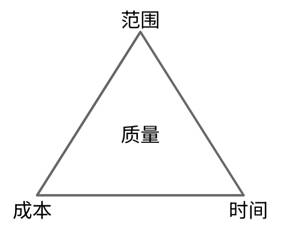
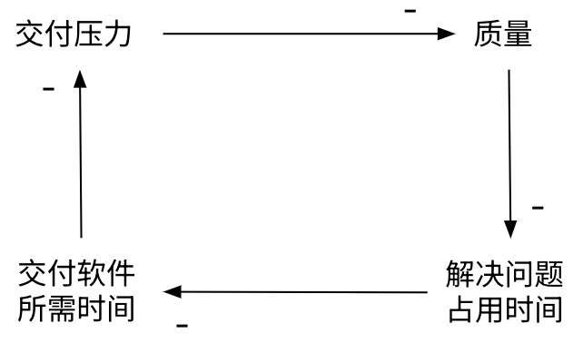
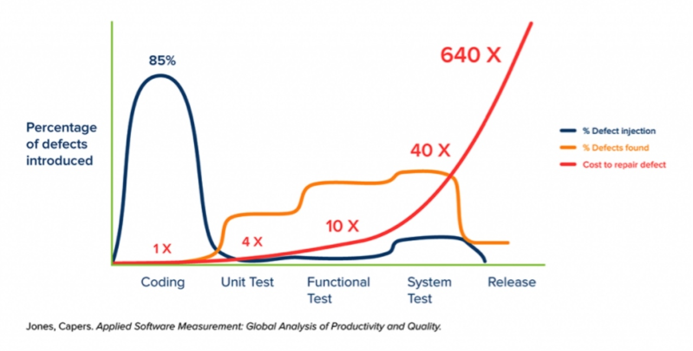
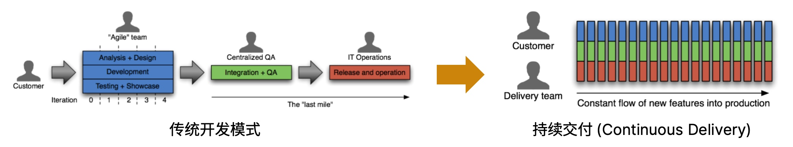
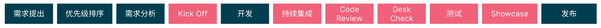
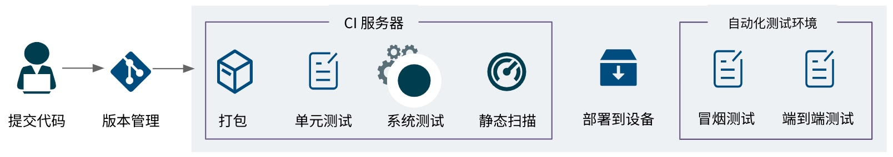
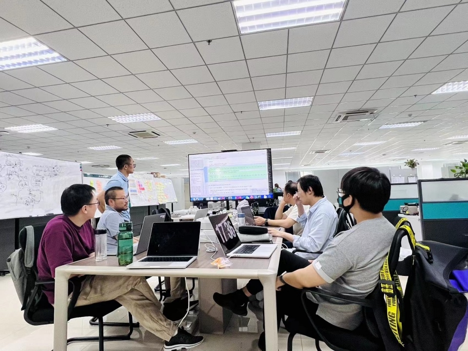
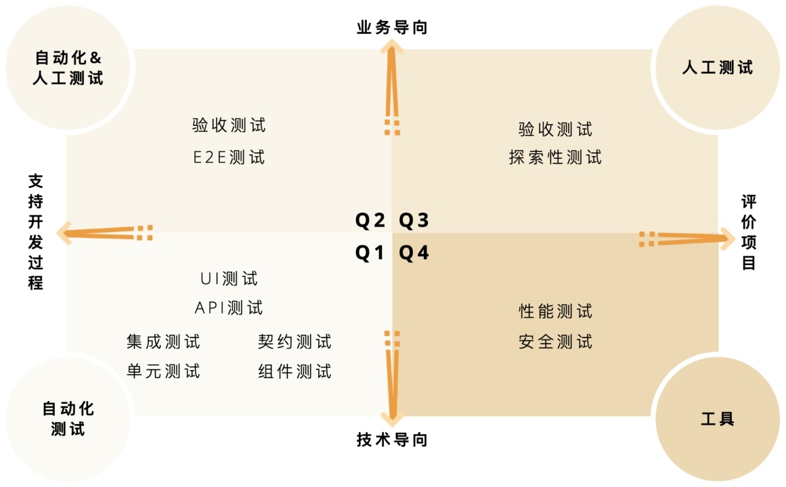
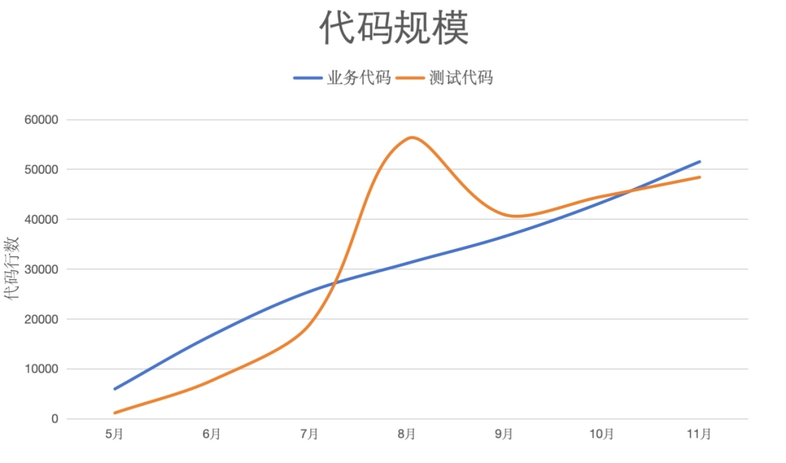
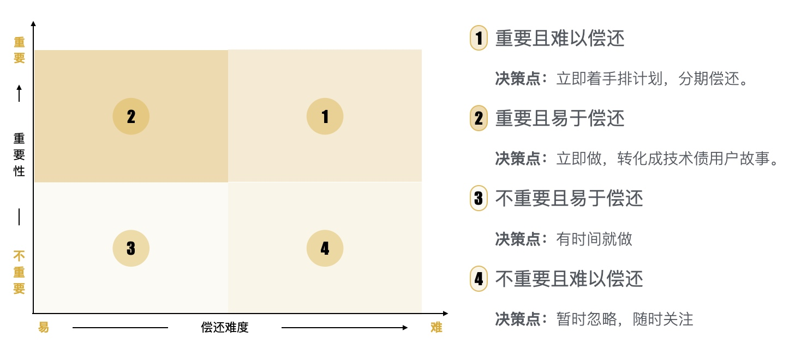

本文为CEO和管理者提供了关于如何在软件开发过程中内建质量的观点，帮助他们避免常见的陷阱，提高团队的效率和产品的市场竞争力。
最先被牺牲的通常是质量，低质量把团队带入深渊
在项目管理中，我们常常面对范围变大、时间紧迫的挑战，而在这样的情境下，质量往往成为了第一个被牺牲的要素。

这种牺牲质量的做法，虽然在短期内看似解决了交付压力的问题，但实际上却为项目埋下了隐患，让团队陷入难以自拨的深渊。

- 交付压力变大 导致 质量下降
- 质量下降 引发 问题增多
- 解决问题 占用 宝贵时间
- 交付时间变少 产生 更大的交付压力
- 团队陷入难以自拨的恶性循环。
质量不是检测出来的，而是构建出来（质量内建）
传统的软件质量管理方法是由测试部门对最终产品进行质量把关，依靠大量测试进行产品验收。产品发布后的质量问题，责任主要在测试部门。但著名质量管理专家戴明在上世纪就指出:
Inspection does not improve the quality, nor guarantee quality. Inspection is too late. The quality, good or bad, is already in the product. ——Dr. Deming

图片来源
问题发现得越晚，成本就越高。所以质量内建的原则是：尽早发现问题，一旦发现尽快修复。它区别于传统方法：
- 质量保障不是事后的一个阶段，而是发生在过程中的每一个阶段
- 质量保障不仅是QA的职责，而是每个团队成员的职责
质量内建和持续交付构成了现代软件开发实践的核心
持续交付 (Continuous Delivery) 是敏捷软件开发和 DevOps 的核心实践。持续交付是一种能力，能够以可持续方式，安全快速地把代码变更（包括特性、配置、缺陷修复和试验）部署到生产环境上，让用户使用。

与传统开发模式相比，持续交付将需求分析、开发、测试和部署的工作融入到每个迭代（e.g. 1-2 周）中。通过持续交付价值、快速收集反馈、及时做出调整、减少无用功能的资源浪费，团队始终聚集在当前最高优先级的价值交付。每一次迭代都是产品的一次进化，快速进化的产品必然在市场竞争中更具优势。同时，这种快速进化的能力离不开质量内建。
雷军在《小米创业思考》中提到，MIUI是全球第一个每周更新的操作系统。这就是一种持续交付能力的体现，有了这种进化能力，MIUI的用户规模和影响力与日俱增。
需求如何拆分决定了持续交付的节奏
将较大的需求进行拆分，就能够进行小批量开发和测试，从而尽早地交付软件。这能带来显著的收益：小批量交付，加速价值流动；及时反馈，低成本拥抱变化。
敏捷团队通常采用用户故事的方式描述需求，而另一些团队则采用需求条目化的方式。不管哪种方式，都是将大需求拆分成更小的颗粒度，以便于在交付流水线上快速流动。它们是需求的载体，也是BA、DEV和QA等不同角色间沟通的桥梁。
用户故事要求用非常简短的语言，从用户角度描述系统需要为用户做的事情以及对用户的价值。通常遵从以下格式：
作为一个<角色>，我想要<功能>，以便于<商业价值>。
它着重描述商业价值，而不只是功能。其目的是帮助开发团队了解需求背后的意图，有利于开发团队协同客户/业务部门设计出更好的解决方案。这也是用户故事 INVEST 原则中 N 的意义：Negotiable（可协商的）。
用户故事要有验收标准：
Given<场景或条件>，When<做了什么操作或采取什么行动>，Then<得到什么结果>。
需求如何拆分非常重要，它直接影响持续交付的节奏。例如要考虑尽快打通 MVP，提前暴露风险，尽早收集反馈等等。
用户故事的生命周期
从需求提出到最终上线，用户故事会经历一系列过程，这个完整过程可以用生产路径图(Path to Production)呈现。
生产路径图可以帮助团队了解开发流程，并识别出延迟、风险和不一致的地方，用可视化的方法来持续改进整个流程。

flowchart LR
需求提出 --> 优先级排序
优先级排序 --> 需求分析
需求分析 --> KickOff:::qualityclass
KickOff --> 开发
开发 --> 持续集成:::qualityclass
持续集成 --> CodeReview:::qualityclass
CodeReview --> 测试:::qualityclass
测试 --> Showcase:::qualityclass
Showcase --> 发布
classDef qualityclass fill:#f96
质量内建发生在每个阶段。
Kick Off：让我们对齐需求的理解
WHAT:
- 在开始开发之前，对用户故事的需求进行澄清，以确保BA、Dev和 QA 对需求达成一致认识。
WHO:
- BA, QA 以及开发这个用户故事的 DEV
WHY:
- 避免分歧：即使有详细的文档也很难避免不同人在理解需求时产生分歧。如果需求开发完成后才发现不对，或者 QA 与 Dev 理解不一致，测出 bug 后再沟通，都会产生极大的浪费。越早解决这个问题，成本越低。
- 进入开发的质量门槛：如果用户故事的质量不达标，例如方案考虑不周，内容不明确，验收条件缺失等，都可能造成它不具备开发条件。这种情况也需要尽早暴露。

持续集成(CI)/持续部署(CD)流水线：快速反馈

这是一个示例流水线。当 Dev 提交代码后，会自动触发CI 流水线，完成构建打包、自动化测试以及代码扫描。因为示例系统涉及硬件，所以还会部署到设备中，进行冒烟测试和端到端的自动化测试。
流水线的工作方式可以追溯到丰田车间精益生产管理安灯系统。任何一个步骤失败，流水线都会停止，亮红灯并通知开发者。问题需要立即解决。
WHY：
- 软件开发需要多人合作，代码集成是一件容易出错、非常痛苦的事情。频繁、持续地集成能够降低出错概率。
- 将一切能自动化的工作都自动化，包括打包、测试、部署等。减少人工工作量和出错概率。
价值：
- 及时验证：每一次代码提交都能验证代码的质量。现有功能是否正常工作，有没有破坏其它功能。
- 修复成本最低：如果流水线失败，意味着有问题发生，此时修复问题成本最低。
- 避免问题重复发生：对于生产环境Bug，先加上自动化测试复现该 Bug，然后在流水线中运行该测试，就能避免该 Bug 重复出现。
CI 纪律： CI/CD 流水线要发挥真正的价值，就必须包含各种自动化测试，并且团队要遵守 CI 纪律：
- 如果当前CI状态是红色，禁止提交新代码。
- CI失败不过夜。
- 一旦提交代码，需要监控流水线的运行状态，直到全部通过，才能着手其他工作。
- 如果问题不能在指定时间(e.g. 30min)内解决，则必须回滚。
Code Review：将问题消灭在今天
WHAT:
- 团队所有开发者每天一起评审代码，发现并记录问题，之后及时修正。
WHY:
- 提升代码质量
- 统一代码风格
- 促进知识分享（技术、业务）
- 提升团队能力
最佳实践：
- 每天固定时间做，每次不要超过1小时。
- 定期整理常见问题，形成检查单。供团队学习和自查。
- 根据团队成熟度，分阶段提升关注点。例如先关注业务正确性和业务知识分享、再关注代码可读性和可维护性。

Desk Check：测试的准入门槛
WHAT:
- 当用户故事开发完成，Dev 在其桌面上演示，BA 和 QA 检查是否达到了用户故事的验收标准。
WHO：
- BA, QA 以及开发这个用户故事的 Dev
WHY:
- 这是进入测试的质量门槛
- 对实现的功能进行快速验收，避免出现功能未完成就提交测试所带来的浪费（这种情况在某些团队经常出现，有些功能在提交测试时，甚至 Dev 都没有自测过）

测试：制定适合的测试策略，关键是要落地！
对于测试的最大误区：测试是 QA 的工作。
- 实际上，Dev 在开发的过程中，需要调试功能、对比结果，这也是一种测试。这类测试如果能够转化成自动化的测试，如单元测试、组件测试等，则可以大幅提高开发效率和质量。当把这种行为做到极致，就是测试驱动开发(TDD)，即先写测试，再写业务代码。
- 测试四象限从不同角度描述了测试的分类，可以用来制定分层测试策略

测试四象限
测试团队最大的痛：永远也测不完。常见的问题包括：
- 测试时间永远被挤压：Deadline 不变，开发延期，留给测试的时间总是被挤压。
- 测试工作量太大：即使开发只做了一小点修改，但难以判断对别的功能有多大影响，所以只能尽量多测一些。
- 永远回归不完：由于缺少自动化测试，每个迭代能把新功能测一遍就不错了，根本无法全部回归。眼睁睁看着问题不断重复出现，却毫无还手之力。

一个真实项目的业务代码和测试代码规模
注：8,9 月份测试代码行数出现明显变化，原因是增加了大量数据驱动的测试，因为有大量重复，9 月进行重构，并删除了无用和重复的代码。
Showcase：让我们庆祝又完成了一次进化！
What:
- 在迭代结束时，团队向 PO(Product Owner) 和相关干系人演示本迭代完成的新功能。收集反馈，调整下个迭代的工作项。将获得 PO 批准的版本发布上线。
Who：
- 团队所有成员
- PO 及相关干系人
Why:
- 固定的节奏对研发团队来说非常重要。
- 获取反馈非常重要，这是产品进化的必然过程，能够快速进化的产品具有更强的生命力。
- 团队需要这样一个庆祝的时刻。这一时刻将激发团队的凝聚力、战斗力和荣誉感，并促使他们持续改进。
内部质量高可以降低总体研发成本
人们通常会认为，一分价钱一分货。价格较低的刀具要么质量更差，要么设计得更差。
然而对于软件而言，可能与你的直觉正好相反：构建高质量的软件产品更便宜，构建低质量的软件产品反而更贵。
类似于一把刀，软件显示了用户可以体验和感知的某些外部质量特性：它快吗？好用吗？但软件还有另一面——它的内部质量决定了它变更和演进能力。
对于一个需要不断响应变化的产品来说，实际上没有开发的“终点”。第一个生产版本的投入只是下一个版本开发周期的开始。
高内部质量意味着整洁、设计良好、易于维护的代码。尽管它对最终用户来说是不可见的，但是随着软件的不断发展，它对增加新特性和实施变更的成本有很大的影响。就像一个凌乱的房间和一个干净整洁的房间之间的区别一样，在一个干净的环境中更容易找到东西，也更有效率。当开发者在一个凌乱的房间内横冲直撞时，质量下降、效率低下就难以避免了。
技术债务：不容易被 PO 理解的拦路虎
当内部质量恶化时，技术债就会增加。当选择一个更快但更混乱的解决方案，而不是用更长时间去做更好的设计时，就会产生技术债。与货币债务类似，如果不偿还，技术债将开始积累利息。这种利息反映在将来更改或增加新特性时增加的成本上。
技术债必须及时偿还。尽管赶在 Deadline 前几周完成任务并牺牲质量是有意义的，但是为了更快地达到下一个里程碑而放弃几个月的内部质量是得不偿失的。事实上，任何将技术债维持数周以上的决定都会适得其反，在短短几个月内导致交付速度下降。
技术债需要得到 PO 支持。另外一个问题是，PO 常常难以理解技术债务的影响。因为它很难量化，即使静态扫描类工具可以扫出坏味道，但到底对业务有多大影响难以评估。所以他们常常让团队只开发业务功能，而从不改进内部质量。
技术债管理方法：对技术债按四象限进行分类，并根据每个象限制定决策。

总结
本文主要讨论了软件产品的质量内建方法。
现代快速变化的商业环境要求软件要能够尽快交付价值，持续交付价值。因此质量内建应该融入包括需求分析、开发、测试和部署等各个环节。
本文讨论了用户故事的全生命周期，并重点介绍了那些质量门禁实践，包括Kick Off、持续集成/持续部署流水线、Code Review、Desk Check、测试策略、Showcase演示等。
最后，技术债务必须及时偿还，否则就会出现本文开头提到的情况。产品的低质量将团队带入无法自拔的深渊。